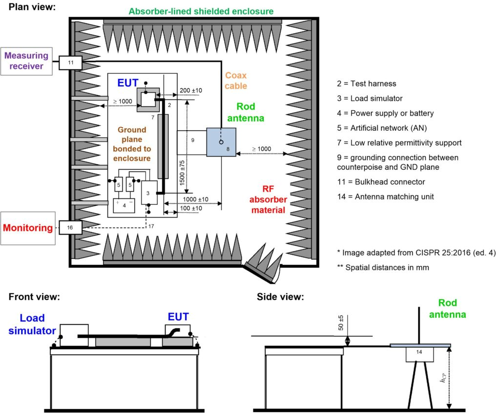
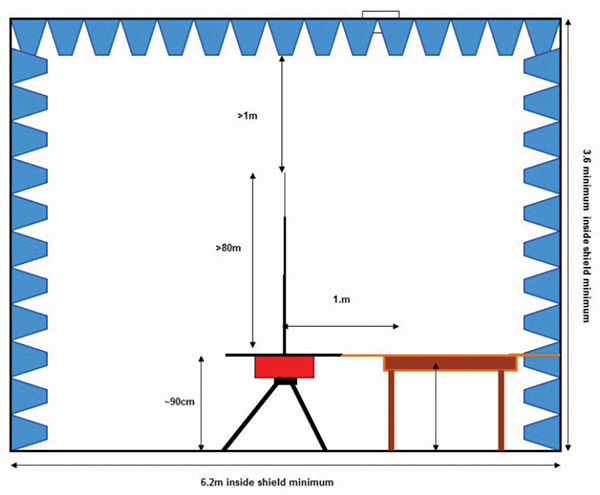
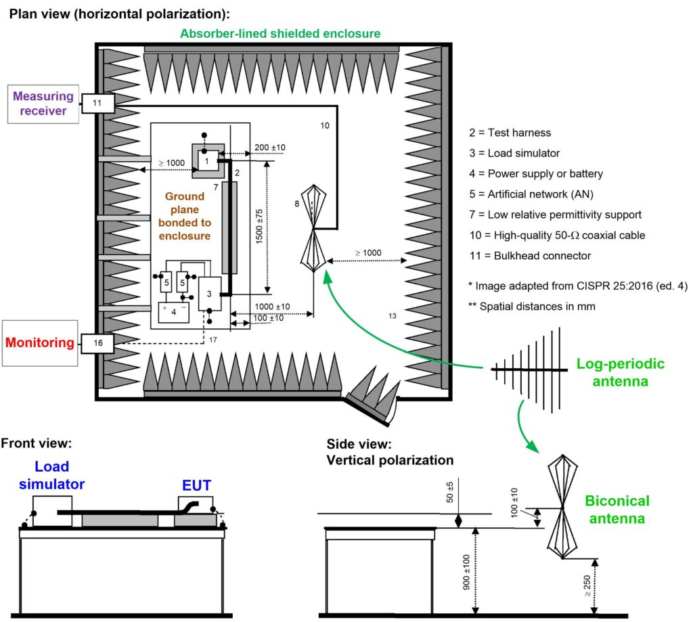
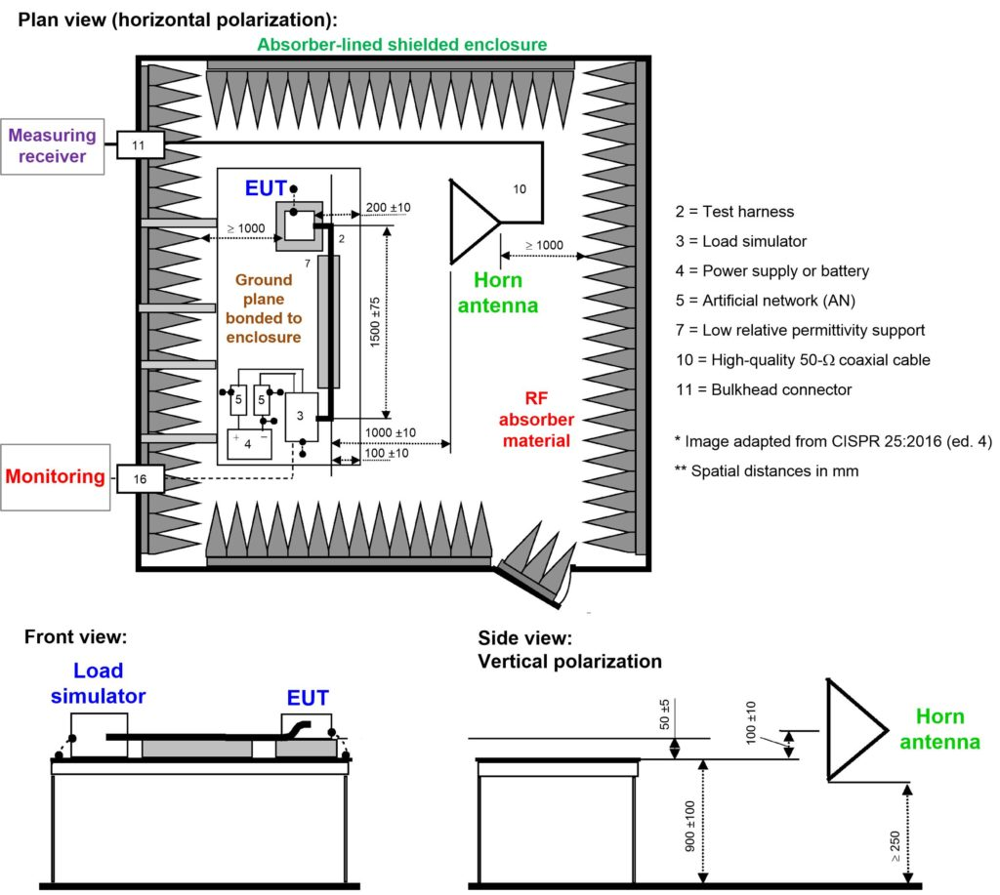
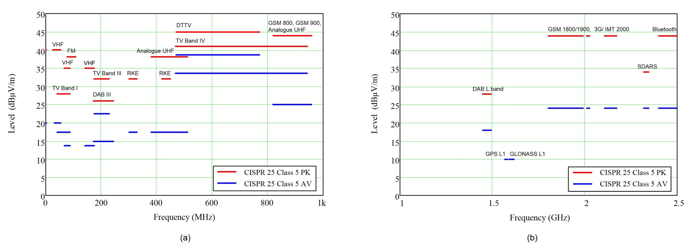

| Scope | Vehicles, boats and internal combustion engines - Radio disturbance characteristics - Limits and methods of measurement for the protection of on-board receivers |
|---|---|
| Methods | ALSE, Stripline, TEM cell |
| Equipment | Antennas: 150 kHz to 30 MHz - Monopole (rod antenna) 30 MHz to 300 MHz - Biconical antenna 200 MHz to 1 GHz - a Log-periodic antenna 1 GHz to 6 GHz - Horn antenna |
| Voltage | 12-14, 24-28 |
| Monopole (Rod-antenna) 150 kHz to 30 MHz |
  |
|---|---|
| Biconical antenna 30 to 300 MHz Log-periodic antenna 200 to 1000 MHz |
 |
| Horn antenna 1 to 6 GHz |
 |
| RE Limits |  |